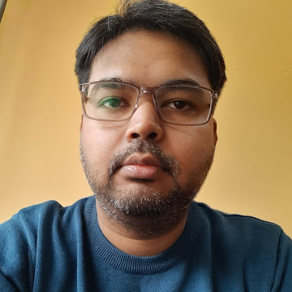

Assistant Professor
I am an Assistant Professor in the Department of Computer Science & Engineering at Techno International New Town, Kolkata. My research lies at the intersection of Mathematical Oncology, Machine Learning, and Computational Biology, with a particular focus on developing mathematical and computational frameworks to understand how cancer grows, invades, and responds to treatment.
I obtained my Ph.D. in Computer Science from the Institute of Science, Banaras Hindu University, Varanasi, where my doctoral thesis examined the mathematical and computational modelling of tumour growth, cancer cell motility, and metastasis. I hold an M.E. in Information Technology (First Division, GATE Scholar) from Jadavpur University, Kolkata, and a B.Tech in Computer Science & Engineering (First Division) from West Bengal University of Technology.
Prior to my current position, I served as an Assistant Professor at Bennett University, Noida, and as a Senior Associate (Data Scientist) at PricewaterhouseCoopers LLP India, where I applied advanced machine learning techniques to demand forecasting and supply chain optimisation. I have also held research positions at the Indian Institute of Technology Kharagpur and the Indian Statistical Institute, Kolkata.
I am a recipient of the UGC-NET Senior Research Fellowship (SRF) and Junior Research Fellowship (JRF) from the University Grants Commission, and the MHRD GATE Scholarship during my postgraduate studies.